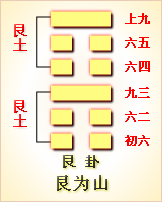
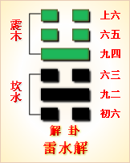
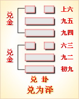

高岛易断 - 17泽雷随
高岛易断 17 泽雷随
《随》：泽上雷下，《震》奋下，《兑》虚上，其中疏流，则内动不自主，而顺从外，从外，故曰"随"，遂以《随》名卦。《兑》为少女，《震》为长男，以少女从长男，是随之义也；兑为泽，《震》为雷，雷震泽中，泽随而动，是随之象也。其义其象，皆取以阳下阴，阴必悦随，朱子所谓"此动彼悦，成随"是也。《序卦》曰，"《豫》必有随，故受之以《随》"，盖为豫悦之道，物来随己，己亦随物，此《随》之所以次于《豫》也。
随：元亨利贞，无咎。
▲ 篆书随
卦体《震》自下而震动，《兑》在上而感悦，从而应和之为《随》。盖有舍己从人，乐取于人以为善，故《随》之道，可以致大亨也。《震》为健，得夫《乾》，故曰"元亨"；《巽》于地为刚卤，合夫《坤》，故曰"利贞"。《杂卦》曰"随无故也"，谓上下各从其所处而安，不待有所为也。无故则无事，无事则何咎之有？然失之贞正，则枉己徇人，易于有咎，亦足戒也。
《彖传》曰：随，刚来而下，柔动而说，随。大亨贞，无咎，而天下随时，随时之义大矣哉！
此卦本《坤》下《乾》上之《否》，《否》之卦顺以随健。今《否》之上爻，下入《坤》之初爻，而为《震》，其初九为成卦之主；《否》之初爻，上入《乾》之上爻，而为《兑》。是以阳下阴，以高下卑，阳动阴悦，物来随我，我亦随物，谓之《随》。"刚来而下柔，动而悦，随"也，是随之义也。凡人君之从善，臣下之奉命，学者之从义，子弟之从师，皆随也。至于人之从天，欲之从理，邪之从正，为随之善者也。随之道利贞正，若反之，则谓之诡随，即违夫时矣。君子随时而动，随时而悦，各得其宜，是以所为无不奏功，故曰"随大亨贞，无咎"。《随》之义，以动而随，不动则必不能随；以悦而随，不悦则必不欲随。雷发于下，雨水随之降于上，是泽随夫雷，上随夫下也；违其时，则雷不动，泽不悦，上下必不相随。不知随之道，必宜合时，推之天下，阴阳刚柔，莫不皆然，故曰"天下随时"。随之时义如此，岂不大哉！
以此卦拟国家，则内卦为人民，行动勤勉，从事职业，不敢上抗政府，惟从政府之所命；外卦为政府，不挟威权，惟施悦民之命令，故得上下君民之间，亲密和悦，上倡下顺，天下和平，人心镇静，此《随》之时也，谓之"随，元亨利贞，无咎"。当此之时，九五之圣明在上，居中正之位，廓然大公，相孚于善。君能虚己从臣，臣更恭顺以从君，是以初爻则"有渝"而不失其正，二爻则有"系"而不免于私，三爻则以"居贞"而"有得"，四爻则以"在道"而无咎，上爻则以"从维"而"用享"。总之，从正则吉，从邪则凶；非随之咎，其所以随者自取其咎。夫人臣随君，以诚相通，是以"元亨"；事必"在道"，以正相从，是以"利贞"。如是则君之随臣者，谏则必纳，言则必听；臣之随君者，令无不从，命无不奉。斯以动感悦，以悦应动，上下相随，而治事"大亨"，故曰："随时之义大矣哉！"
以此卦拟人事，惟在以强随弱也。夫阳刚之人，不肯下人，是以人心常多乖离，而事业概不得成。若能以刚下柔，措置得宜，则众心必服，何咎之有？随者，不专己之意，即舍己从人，取人为善，其机甚捷，其理甚顺，其功必易成，故曰"元亨"。然随之道，有正有邪，苟其一于柔顺，必致枉道以徇人；过于容悦，则将违道而干誉，是失随之正也。惟其动其悦，悉随夫时，内不失己，外不失人，斯随得其正，咎何有焉！故曰"利贞，无咎"。《易·彖》中系"元亨利贞"之辞者凡七，《乾》、《坤》、《屯》、《随》、《临》、《无妄》，皆在上经，《革》一卦在下经，皆大有为之时，以我得乘时之势，曰"元亨利贞"。"元亨利贞"之解，详《乾》下，须参看。随时之义甚大，推之造化，则震者春也，东方之卦也，万物随之而生，《兑》者秋也，西方之卦也，万物随之而成，故春生之，夏长之，秋成之，冬藏之，各随其时也。天下之理，不动则无所随，不悦则不能随。是《随》之义也，人事莫不皆然。
通观此卦，三阳三阴，初九以阳与六二遇，阳之随阴也；九五之孚上六，亦阳之随阴也；六二以阴居阴，是阴之从阴也，故曰"系"。有系必有失，不言凶咎，而凶咎可知。六三以阴居阳，是阴之从阳也，以阴故亦曰"系"，然系所当系，系即随，故曰"利居贞"。九四是以阳而随阴，逼近于五，刚而有获，臣道凶矣；惟能感之以诚，保之以哲，复有何咎乎？九五尊位，上动下悦之主，取人以为善，吉莫大矣。上六以柔顺居《随》之极，极夫随者也，能善用其系，系亦得其正也。总之，《随》之道，宜随时为动，从宜适度，处以至诚，出以大公，不特可感格群民，且可用享上帝，将率天下为随时矣。君子观此爻，而知随时之义甚大。盖前卦自《豫》来，悦以随时，无拂逆之情。《序卦传》曰，"《豫》必有随，故受之以《随》"，人能谦以致豫，则能悦以随时。不谦则安能豫？不豫则安能随？三者道同，而机会相因，机会者，惟在于时而已，而适时莫如随。然"随必有事"，有事而后蛊，此所以《蛊》次于《随》也。是故《随》如文王之事殷，《蛊》如武王之造周。夫《易》者不测之神藏，圆妙之灵府也，观之于万物，推之于万事，无所不在，无所不赅，非神圣之道，则安能如此乎？
《大象》曰：泽中有雷，随。君子以向晦入宴息。
此卦以《震》阳陷《兑》阴，有藏伏之象，《象》曰"泽中有雷，随"，不曰雷之动，而曰雷之有，《本义》以雷藏泽中释之，深得其旨，盖知象之取义，在雷伏势时也。君子观此象；故不言动作，但言"宴息"。雷之伏藏，在寒冬，人之宴息，在"向晦"，盖亦各随其时也。君子应天而时行，时当"向晦"，入居于内，宴息以养其身，起居随时，惟宜自适。盖其动也，与雷俱出；其静也，与雷俱入。《豫》之"作乐崇德"，《大壮》之"非礼弗履"，《无妄》之"茂对时育"，皆法春雷之动也；《复》之闭关息旅，《随》之向晦宴息，皆法秋雷之藏也。夫舍百为之烦扰，就一枕之安闲，所以养精神于鼓舞之余，以为将来应用之地。故以形息者，凡民所同；以心息者，君子所独。君子虽才德兼备，当随时适宜，否则亦必有咎，是以遇随之时，韬智藏德，辞禄不居，养晦以遵时，抱道而伏处。文王之服事殷纣，勾践之隐会稽，皆得向晦宴息之义者也，谓之"君子以向晦入宴息"。互卦三、四、五为《巽》，二、三、四为《艮》，《巽》为入，《艮》为止，即入而止息之象也。
【占】 问时运：目下气运平常，宜暂时晦藏，明年利于远行，至第五年，则可得利。
○ 问战征：宜退守，明年当小有功，必俟六年，斯敌皆就缚矣。
○ 问商业：有货一时难售，来春可以获利。
○ 问家宅：防有伏怪，夜间致多惊惧。
○ 问讼事：恐有牢狱之灾，明年又防征役远行。凶。
○ 问失物：宜在枕席间觅之。
○ 问六甲：生女。
○ 问行人：即归。
○ 问出行：以明年为利。
高岛易断 初九：官有渝，贞吉。出门交有功。
《象传》曰：官有渝，从正吉也。出门交有功，不失也。
此卦六爻，各以随人立义，专取相比相从，不取应爻。"官"，谓心之官，凡人作事，皆以心官主之。"渝"者变也，"有渝"者，谓变易其所主司也。官虽贵有守，处随之时，不可不知权变，变者趋时从权之谓也。此爻刚而得正，为成卦之主，主者不可随人，故不言随。"有渝"而得其正，故曰"贞吉"。"出门"则所见者广，所闻者多，不溺于私，惟善是从，则随不失时，变不失正，虚己听人，广交而有功也，故曰"出门交有功"。
【占】 问时运：目下正当换运之时，交入新运，一动便佳，尤利出门。
○ 问商业：货物当贩运出外，得利。
○ 问家宅：当以修造吉，或迁居出外，更利。
○ 问战征：击东者变而击西，击南者变而攻北，吉。
○ 问疾病：恐药不对症，宜改变药饵，乃吉。或于远方求医，更利。
○ 问失物：门外寻之，得。
○ 问六甲：生男。
【例】 占友人某就官，筮得《随》之《萃》。
断曰：此卦《兑》上《震》下，为刚阳伏而从阴，是《随》卦之所取义也。今占得初爻，足下虽学力刚强，不得不俯从愚柔，亦时为之也。凡始入仕途者，以不熟事务，每事须从老成之指挥，是又随之道也。此中固不能自主，所当舍己而从人，谓之"官有渝，贞吉"。又不宜独处，所当广交以集益，谓之"出门交有功"。后果如此占。
高岛易断 六二：系小子，失丈夫。
《象传》曰：系小子于，弗兼与也。
刚有以自立，谓之随，柔不足自立，谓之系，故初、四、五，刚不言系，二、三、上，皆柔曰系。随则公，故无失；系则私，故有失。六二以柔居阴，与四隔位，遂系乎四，四阳而居阴，谓之"小子"，是隔位为系之谓也。系四则不能比初，初爻为《随》之主，是谓"丈夫"，故曰"系小子，失丈夫"。旧说谓二系初，失在初，阳犹微，谓之小子，五居尊位，谓之丈夫。然初为卦主，何得曰小子？五为君位，何可曰丈夫？且阳爻为丈夫，初阳爻也，目为小子，其说亦反。夫人之所随，得正则远邪，从非则失是，六二系失所系，虽无凶咎之辞，其不吉可不言而知。《象传》曰"弗兼与也"，谓天地之道，无两全之义，"系小子"，必"失丈夫"，理之当然也。
【占】 问时运：目下气运颠倒，宜自审慎。
○ 问商业：有贪小失大之惧。
○ 问家宅：阴阳倒置，有女子小人弄权，反致家主受制之象。
○ 问战征：只能捉捕敌兵，未获斩将拔旗之捷。
○ 问六甲：生女。
○ 问失物：小品可得，大件必失。
○ 问婚嫁：恐非良缘。
【例】 熊本县人尾藤判事，曾学《易》于余，同氏有女年十八，容貌艳丽，时某缙绅丧妻，以媒求婚于氏，氏因请占其吉凶。筮得《随》之《兑》。
断曰：此卦刚从柔之象，而非柔从刚之时也。今足下卜嫁女，则女家为柔，而男家为刚也。爻象以刚从柔，殊嫌相反。二爻曰"系小子，失丈夫"，想某缙绅必是老夫也，令女或不喜之，宜嫁少年小子，斯两相得也。
氏闻之，如有所感悟曰：夫妇者，女子终生之事也，不可以亲之所好，枉女子之志。遂谢缙绅。
高岛易断 六三：系丈夫，失小子。随有求得，利居贞。
《象传》曰：系丈夫，志舍下也。
"丈夫"，指初九；"小子"，指九四。初为《随》卦之主，以刚居阳，出门有功，谓之"丈夫"；四以刚居阴，其义有凶，谓之"小子"，系初失四，故曰"系丈夫，失小子"，正与二爻相反。初爻本欲出门求交，得三之《随》，必与之亲善，故三之《随》初，有求而得也。初以随求人，苟枉己徇人，虽得亦失，故云"利居贞"。六三才虽弱，位得其正，系"贞吉"之初，失"贞凶"之四，是得居贞之利，即随道之善也，所以求道而得道，求仁而得仁，无求而亦自得焉。互卦《巽》为近利，故"有得"。"居贞"者，谓守常止分，以道自固，以义自裁，不以动而妄求也。《象传》曰"志舍下也"，阳上阴下，三居阳位，所系在阳，所失在阴，故曰"志合下也"。一说丈夫指四，小子指初，与二爻以五谓丈夫，前后不同。且四"贞凶"，何得云丈夫？初"有功"何得云小子？于以刚从柔为随，以柔从人为系之说，亦不合。
【占】 问时运：目下交正运，求财求名，无不如意。
○ 问商业：小往大来，必得利益。
○ 问战征：主生擒敌将，必得大捷。
○ 问家宅：家道丰富，但防小儿辈有灾。
○ 问疾病：大人无妨，小人恐有不利。
○ 问六甲：恐生而不育。
○ 问失物：得。
○ 问婚嫁：主结高亲。
【例】 神奈川町净土宗成佛寺住职辨真和尚，名僧辨玉和尚之徒，修小乘之学者也，一日来问余讲《易》，感悟而欲学《易》，且云学之得成与否，请烦一筮。筮而得《随》之《革》。
断曰：《随》卦虽为刚从柔，在爻则否，阳爻曰随，阴爻曰系。今子就余学《易》，即探以内典之精奥，旁求神《易》之微妙，是所求皆天神之道，不关尘世琐细小务，故谓"系丈夫，失小子"也。故从余学易，纵使内典中有难解之事，自可求神而问之，求之必得，现世未来，皆得安心决定也。故曰"随有求得，利居贞"也。
和尚闻之，大悦，从此学《易》，今尚不倦。
高岛易断 九四：随有获，贞凶。有孚在道，以明，何咎？
《象传》曰：随有获，其义凶也。有孚在道，明功也。
获者，取非其有之辞，"有获"者，谓得天下之心，使之随己也。是私据其所有，而不归于五，失臣道也，故曰"贞凶"。为臣之道无他，惟在以诚相孚而已，"诚则明"，明则无疑，无疑则君臣一心，德施于民而民随之。其得民之随者，相率而共随于君，足以成君之功，致国之治者，皆在此相孚有道耳，复何有咎？否则上下疑猜，即所当获，不免启挟功凌上之嫌，虽正亦凶也。九四具阳刚之才，处大臣之位，才高致谤，位重启嫌，一涉偏私，便招凶祸。惟其中之所存，一秉于诚，外之所行，一循夫理，尽其道以事上，明其几以保身，位虽高不疑于迫，势虽重不嫌于专，君嘉其让，民服其谦，得随之时，协随之宜，何咎之有？故曰"有孚在道，以明，何咎"。"有孚"者，谓有孚于九五也；"明"者，谓自明其志也。自古人臣处功名之际，不克保终者，多由我心之不孚，与不能自明其志也。如汉萧何韩信，皆受君重任，韩信求封于齐，求王于楚，无欲而不获者也，久之积疑生嫌，卒不免祸。萧何虽素知高帝之心，得保首领而终，不免械击之辱，是于"有孚""以明"之义，犹未尽者也。如唐郭子仪权倾天下，而上不忌，功盖一世，而上不疑，可谓得"有孚在道"者矣。《象传》曰"有孚在道，明功也"，以功云者，释爻之"何咎"。盖"有孚"者，即以孚随之道；"明功"者，即明其随之功也。
一说"随有获"者，谓以权在我，任己所为之意；"贞"者谓所系国家之正务；"凶"者有僭逼之疑；"有孚"者心尽其诚；"在道"者行尽其道；"何咎"者，无失臣职之意也。亦通。
【占】 问时运：目下有凶有吉，利在单月，不利双月，明年则吉。
○ 问商业：获利后，防有意外之祸，必俟辨明方可。
○ 问家宅：或新买，或新造，皆不吉。
○ 问战征：小胜后，防大败。
○ 问疾病：先凶后吉。
○ 问讼事：始审凶，上控则无咎。
○ 问失物：一时难觅，待后方见。
【例】 明治二十七年六月，相识岩谷松平氏来告曰：往年政府，下付士族以金禄公债证书，鹿儿岛县士族中，有遗漏此典者，今欲补请恩给，请占其准否。筮得《随》之《屯》。
断曰：随有获者，是专意求获之谓也。鹿儿岛县士族，维新之际，伟烈丰功，为政府所优待，遍世所知也。今欲谋请恩给，占得《随》之四爻，以阳居阴，乘政府之优待，意在强求，务期必获，故《象传》曰"随有获，其义凶也"。然当以公平之道，请求于上，必可得许，谓之"有孚在道，明功也"。
【例】 某缙绅来，请占某贵显气运，筮得《随》之《屯》。
断曰：此卦吾能从人，则人亦从我。今占得四爻，某贵显在现职，众人咸乐为随从。其所以随从者，非服从其德量，实欲攀附其权势也。若因此自负得民，则不祥之道也，故曰"贞凶"。际此民心之归向，以诚相孚，以明自审，即所获以归诸君上，不以自私，道可孚也，功可明也，何咎之有？反是则难免于咎。
高岛易断 九五：孚于嘉，吉。
《象传》曰：孚于嘉，吉。位中止也。
"嘉"者，善也，谓择善而从之。随其善者，非随其人也。"孚"者，以真实诚一之心，相与感通也。"吉"者，谓君明臣良，天下从之，无不服从其化也。舍己从人，乐取于人以为善，即所谓"孚于嘉"是也。五爻阳刚中正，位居至尊，为全卦悦随之主，是圣君至诚相感，以乐从天下之善者也。夫人主之尊，其所随之可否，悉系国家之休戚。尚贤而信之，其所以吉也，如此则不失人，亦不失己，随道之正也，谓之"孚于嘉，吉"。《象传》曰"位中正也"，以阳刚居阳位，得其正也，处中正之位，行中正之道，是以嘉也。
一说此爻以阳刚，比上六之柔正，谓上六以柔居阴，有女子之象。今九五孚之为婚，是取婚礼为嘉礼之义。盖随之道，莫切乎夫妇，天下之政化，始于闺门，故曰"孚于嘉"。亦通。
【占】 问时运：目下处盛运，万事获吉。
○ 问商业：以其货物嘉美，获利百倍。
○ 问家宅：必是积善之家，众咸信从，为一乡之望也。
○ 问战征：军众同心，必获胜捷，吉。
○ 问婚嫁：百年好合，大吉。
○ 问讼事：和好。
○ 问疾病：吉。
○ 问六甲：生男。
【例】 明治三年某月，应某贵显之召，贵显曰有一事，为烦一筮。筮得《随》之《震》。
断曰：此卦当秋冬之时，《震》雷藏于《兑》泽，有强随弱之象，《彖传》谓之"刚来而下，柔动而悦，大亨贞，无咎"。全卦初、二、五、六四爻，以刚随柔，皆谓得位，四、三二爻，以柔系刚，谓之失位，惟四爻系恋于柔，且能率众而《随》九五。由是观之，知有威权者，能使众从己，相率而从九五之君也。今占得九五，可见天下之人心，无不从君上之所命也。天命如此，故《彖传》曰："随时之义大矣哉！"
后未几而有废藩置县之令。
【例】 元老院议官某氏，转任某县知事，将赴任，请余占施政准则。筮得《随》之《震》。
断曰：《随》卦有以刚从柔之义，是降尊从卑之象。今足下治该县，下从民情，不涉私意，人民自然嘉乐悦豫，可以随从归服也，谓之"孚于嘉，吉"。
从前该县之治，纷争不绝，某氏赴任之后，因此施治，静稳平和，乃得无事。
高岛易断 上六：拘系之，乃从维之。王用亨于西山。
《象传》曰：拘系之，上穷也。
"拘"者，执而不弃之谓也；"维"者，交结也。管子曰："礼义廉耻，谓国之四维，乃维民之道也。"盖其所随，极其诚意缠绵，固结而有不可解者矣。至诚之极，可以孚君心，可以享鬼神，是随之极则也。"王"者，指周王而言；"西山"指歧山而言。此爻以阴居《随》之极位，天下之臣民，随顺化服之极也，故不复言随，反将拘系九五，九五亦从其所系而维之。居《随》之极，效至诚于君，相知之深，相信之笃，终始无间者也。譬如一物，人所爱好，惟恐或失之，既"拘系之"，又从而维之，即所谓拳拳服膺，而不失之意也。昔周大王避戎狄之难，去豳移居歧山之下，民之从之者如归市，是"拘系之"也，大王亦即以道维之。夫大王之去豳也，势穷而人益随之，故周室之业，自此而兴。文王之时，天下之人，无思不服，而文王尚守臣节，享大王于封内之西山，不敢僭郊之禘礼。固结其鬼神，正所以固结于君也，故有此上六之诚意，足以通神明，神明亦随之，谓之"王用享于西山"。凡《易》之爻曰"王用享"者三，皆谓王者用，此爻则以贤臣而享山川，非指其爻而为王也。若夫使之主祭，而百神享之，可以见王者之克当天心，莫大于用贤也。《象传》"上穷也"者，"上"，即尚字，是谓随道之极，无以复尚之也。
【占】 问时运：目下左支有绌，不甚如意。
○ 问商业：坚固结实，稳当可做，但未能事事舒展。
○ 问家宅：恐防范约束过严，家人怨苦。
○ 问疾病：祷之则吉。
○ 问婚嫁：有赤绳系臂之缘。
○ 问讼事：恐有桎梏困系之患。
○ 问失物：是自己包裹藏之，未尝失也。
○ 问六甲：生女。
【例】 南部山本宽次郎氏，余之旧友也。维新之际，赴函馆之役，边地战争之时，在将帅中颇有勇武之名。明治十二年七月，与旧藩士五人，过访敝庐，谓余曰：君有谈《易》之癖，以为快乐，予甚苦之，若换以他乐如何？君自言《易》占必中，谓政府所不可不用；陆海军关人命之重，系国家之存亡；裁判所，明是非，分曲直，皆不可不用。然于未来之事，或中或不中，恐难一一预知。余曰：小人闻道而笑之，"不笑不足以为道"，《易》岂如足下所言哉？余二十年之久，未尝一日废《易》，所以然者，以百占百中也。山本氏闻之，笑曰：果如君言，则吾命何时而终？愿一占迟速，俾可前知。余曰：是极容易。筮得《随》之《无妄》。
断曰：《随》者为《震》之长男，从《兑》之少女，又为归魂之卦。今占得上爻，君之命，可终于本年也。君之妻子墓祭之象，正见于爻辞："拘系之"者，谓系连于君者；"维之"者，谓有子女；"亨于西山"者，谓葬足下于宅之西也。
山本氏听毕，冷笑，如不介意，诸士或疑或笑。既而其年十月，南部某寄书于余云：山本氏昨夜急罹中风，半身不遂，因召唤妻子于本国。其妻子未至之时，请借神奈川别邸中一户为寓。未几妻子来迎，同归盛罔，迨十二月不起。于是当时诸士，听余言而笑者，皆为惊叹。
【例】 明治三十一年十月，宪政党分离为二，旧改进党称宪政本党，旧自由党称宪政党，各树旗帜。时策士井上角五郎、尾崎三郎、雨宫敬治郎等，见宪政党权力之薄，使之提携山悬内阁，乘其虚，将使实行板垣伯所主张铁道国有论。三氏来请占宪政党内"阁之提携成否，筮得《随》之《无妄》。
断曰：此卦下卦之雷动，上卦之泽悦《系辞传》曰："服牛乘马，引重致远，以利天下，盖取诸随。"由是观之，宪政党不啻随从政府，粉身碎骨，能贯彻政府之意向。今占得上爻，其辞曰"拘系之，乃从维之"，谓提携之密着也；"王用亨于西山"，谓政府得宪政党之援助，海陆军扩张之费用，得如其意，喜悦之余，得举行靖国神社之祭礼也。后果如此占。
周易 - 17泽雷随
周易第17卦_随卦(泽雷随)_兑上震下
|  |  |  |

|
| 本卦：随卦 | 互卦：节卦 | 错卦：蛊卦 | 综卦：大过卦 |
传统解卦
这个卦是异卦（下震上兑）相叠，震为雷，为动；兑为悦，动而悦就是"随"。随指相互顺从，己有随物，物能随己，彼此沟通。随必依时顺势，有原则和条件，以坚贞为前提。
大象：震木在兑泽之下，木必随水漂荡，随者，顺也。
运势：有去旧迎新之吉象，宜与人合作，可获厚利，忌三心两意，或独断独行。
事业：对社会和人生有正确的认识，重视人际关系，善于同他人合作，事业会很顺利。为了保证取得更进一步的成功，不得贪图小利，向比自己优秀的人学习，择善而从，心存诚信、努力开拓事业。
经商：顺利。在与他人的真诚合作下，能够达到预期的目的。在竞争中应保持清醒头脑，从大处、长远考虑，遵守商业道德，保持至诚的态度对待顾客和同行，会保持竞争优势。
求名：在自己刻苦钻研的基础上，虚心向有德有才的师长学习，借助外界的力量，促使自己更快的进步，实现个人的理想。
婚恋：双方情投意合可以成功，家庭和睦，但若迷恋于情爱，会影响双方的事业，务必注意。
决策：个人成长道路并不十分顺利，但由于谦虚、随和，人际关系好，尤其能够得到长辈的器重，各种事都能在他人的帮助和关心下成功。但务必注意追随他人应有的立场和原则，不可趋炎附势，招致祸凶。
初九爻的哲学含义
泽雷随卦，指随从、随和、跟随等等。这个卦是异卦相叠，下卦为震，上卦为兑。震为雷、为动；兑为悦。动而悦就是"随"。
从卦象上分析，豫卦上卦为兑为泽为喜悦，下卦为震为雷为动，雷在泽中、心喜而动便是豫卦的卦象。雷怎么会藏在沼泽地里呢？原来，古人通过观察，发现春雷响过之后，惊醒了蛰伏的动物，于是万物苏醒，大地上开始呈现出勃勃生机。可是到了秋天的阴历八月以后，便没有雷声了，一些动物开始为冬眠做准备。通过这个现象，古人认为这就是天道的善意，天气转暖了，天用雷声唤醒大地上的万物；天气转凉了，天便把雷藏了起来，不再惊动大地上的万物了。由于此时沼泽地里也会发出一种声音，所以人们便认为雷到了秋天便藏到了沼泽地里了。从这个卦象中可以看出，随卦还有随时而动的含义。而震卦代表动，兑卦代表喜悦，所以有随着喜悦而动，追随喜悦的含义。
随卦之象：云中雁传书，主信至；一堆钱，有才义；朱门内有人坐，主坐官府；一人在门外立，主士人求进，欲得变身。凡事值此，得贵人力。良石琢玉之卦，如水推画之象。
周易第十七卦初九爻详解
初九爻辞
初九。官有渝，贞吉。 出门交有功。
象曰：官有渝，从正吉也；出门交有功，不失也。
白话文解释
初九：馆舍时里发生事故，筮遇此爻则吉，出门同行都得好处。
《象辞》说：官吏把事情办坏了，归从正道则吉利。出门同行都得好处，这是不失正道的缘故。
北宋易学家邵雍解
吉：得此爻者，多获利。做官的正当好运，有升迁之机。
台湾国学大儒傅佩荣解
时运：交运之时，利于变动。
财运：货物外售，可以得利。
家宅：装修迁居。
身体：改变用药，远方求医。
初九变卦

初九爻动变得周易第33卦：天山遁。这个卦是异卦（下艮上乾）相叠。乾为天，艮为山。天下有山，山高天退。阴长阳消，小人得势，君子退隐，明哲保身，伺机救天下。
初九爻的哲学含义
占得此卦者，可能职务会有所变动，但是，你不必为此苦恼，只要坚持正道，最终还是吉祥的。如果因职位变动而觉得不快，不妨到外面去，可能会结交到更好的朋友，也可能找到机会建立新功。但是，要唯正是从，见善则从，这样才没有过失。
随卦是从否卦变化而来的，否卦的上九与初六互换位置，便形成了随卦。可见这个初九爻本来是否卦的上九爻，上九爻来到初九爻，从卦象上看有降职的意思，所以说"官有渝"。原来高高在上，现在来到了最下层，与民众打成一片，所以说"出门刁交有功"。在社会中，高高在上的人总会有变为平民的可能。可是，正是这样才能体察民间疾苦，才能磨练自己的人生阅历，才能使自己的人生走上一个新台阶。比如春秋时期的晋文公重耳，正是十七年的流亡生活，磨砺了他的意志，丰富了他的阅历，从而使他回国后励精图治，成为春秋五霸之一。
周易第十七卦九二爻详解
六二爻辞
六二。系小子，失丈夫。
象曰：系小子，弗兼与也。
白话文解释
六二：抓住了未成年的奴隶，跑了成年的奴隶。
《象辞》说：抓住了小的，跑了大的，意思是两者不能兼得。
北宋易学家邵雍解
凶：得此爻者，不安宁，或受小人的暗算，是非不断。当官的宜退守，进取者要有自知之明。
台湾国学大儒傅佩荣解
时运：形势颠倒，最好谨慎。
财运：贪小失大，显然不利。
家宅：家主受累；婚嫁不妥。
身体：顾此失彼。
六二变卦

六二爻动变得周易第45卦：泽地萃。这个卦是异卦（下坤上兑）相叠，坤为地、为顺；兑为泽、为水。泽泛滥淹没大地，人众多相互斗争，危机必四伏，务必顺天任贤，未雨绸缪，柔顺而又和悦，彼此相得益彰，安居乐业。萃，聚集、团结。
九二爻
的哲学含义
随卦第二爻，爻辞：六二：系小子，失丈夫。
占得此爻者，要注意自己是否太过于轻信于年轻人，或是与小人过从甚密，从而使得经验丰富或者正直的君子看不过去，离你而去。如果这样，你会得不偿
失。
《象》曰：系小子，弗兼与也这句话告诉人们，"倾心随从于年轻小子则会失去阳刚方正的丈夫"，因为二者是互相排斥的，是不可兼得的。正如楚怀王听信令尹子椒、上官大夫靳尚和宠妃郑袖的谗言，而疏远屈原，屈原为表忠心投河自杀。楚怀王就是"系小子，
失丈夫"的下场。
六二阴爻居偶位，既得位又居中得正。可是它却面临着一个双向选择。怎么回事呢?这六二就好比一位女子，与其相临的是一个地位低下的小伙子，可是有一位有权势的人（九五）也喜欢她，她该怎么选择呢?由于小伙子离她近，她选择了小伙子。这就是"系小子，失丈夫"。可是六二的地位相当于大夫之位，他是搜刮民膏民脂进贡给上面的君王呢?还是爱民如子，减轻税收，少给上面的君王进贡呢?这便是六二的两种选择。两者他不能兼顾。从卦象上看，六二选择了爱民，因为得人者得天下嘛。
周易第十七卦九三爻详解详解
六三爻辞
六三。系丈夫，失小子。随有求得，利居贞。
象曰：系丈夫，志舍下也。
白话文解释
六三：抓住了成年奴隶，跑了未成年奴隶。希望无失不如现得。筮遇此爻，卜问居处则吉利。
《象辞》说：抓了大的，跑了小的，其志在于追逐大的，舍弃小的。
北宋易学家邵雍解
平：得此爻者，营谋遂意，但宜走正道，才能得利。做官的会得到保举而升迁有望。
台湾国学大儒傅佩荣解
时运：求财求名，皆为正运。
财运：小往大来，利益可期。
家宅：积蓄有成，关心子女。
身体：大人无妨，小孩不利。
六三变卦
六三爻动变得周易第49卦：泽火革。这个卦是异卦（下离上兑）相叠。离为火、兑为泽，泽内有水。水在上而下浇，火在下而上升。火旺水干，水大火熄。二者相生亦相克，必然出现变革。变革是宇宙的基本规律。
九三爻
的哲学含义
随卦第三爻，爻辞：六三：系丈夫，失小子。随有求得，利居贞。
六三的地位比六二大些，所以向上爬的欲望也大。六三就好比一位富贵人家的小姐，与贫民阶层的小伙子们没有什么来往，所以不会与他们之间发生爱情。她愿意与比自己更高贵的人交往，干是便看上了上面的九四。九四在六三的上面，所以地位比六三要高，自然六三也就得处处顺从九四的安排了。所以说六三失去了小伙子（初九），而到了丈夫（九四）。可是要想维持好这个婚姻关系，女方是必须入乡随俗，坚守忠贞之道的。因为富贵人家规矩多嘛。并且六三是豫卦下互卦艮卦的中爻，有止的意思，所以"利居贞"。
周易第十七卦九四爻详解详解
九四爻辞
九四。随有获，贞凶。有孚在道，以明，何咎。
象曰：随有获，其义凶也。有孚在道，明功也。
白话文解释
九四：追名逐利，贪多务获，卜问得凶兆。押送俘虏上路，明于约束，没有灾难。
《象辞》说：追名逐利，贪多务获，这种人遭遇凶险是应该的。谨守信用，严守正道，这是明察事功的结果。
北宋易学家邵雍解
平：得此爻者，会得到好人的抬举，化凶为吉。做官的会身居要职，努力进取者可成事，可获得名利。
台湾国学大儒傅佩荣解
时运：吉凶互见，明年吉祥。
财运：虽有获利，小心意外。
家宅：置屋不宜。
身体：先凶后吉。
九四变卦

九四爻动变得周易第3卦：水雷屯。这个卦是异卦（下震上坎）相叠，震为雷，喻动；坎为雨，喻险。雷雨交加，险象丛生，环境恶劣。"屯"原指植物萌生大地，万物始生，充满艰难险阻，然而顺时应运，必欣欣向荣。
九四爻
的哲学含义
随卦第四爻，爻辞：九四：随有获，贞凶；有孚在道，以明，何咎！
占得此爻者，因为诚信待人，不违正道，而有很多追随的人。虽然有人追随是好事，但是不能为满足虚荣心而对他们不加限制，不要什么样的人都接纳，否则会引起其他崇敬者的不满。
九四所处的位置是在九五之下，是君主的近臣，领导的助手，在受到众人的追随时，要防止被领导猜忌。要不违正道，光明磊落，这样领导就会打消对你的猜忌，你也能免除灾难。
九四的"随"指的是什么呢？指的便是六二的追随。从男女关系来说，六三追求九四，九四所以得到了六三而"有获"。另外，九四相当于侯王的地位，又相当于君王的重臣，六三为阴为小人，小人追随有权势的九四，给九四送礼，送糖衣炮弹，九四对人家的好意一概照收，所以"随有获"。可是这样却会导致"九四"失正，近君九五而有能力，虽有所获，但难免凶险。
周易第十七卦九五爻详解详解
九五爻辞
九五。孚于嘉，吉。
象曰：孚于嘉吉，位正中也。
白话文解释
九五：俘虏了不少嘉人，吉利。
《象辞》说：信守中正之道，诸事吉利，因为九五之爻居上卦中位，像人守中正之道。
北宋易学家邵雍解
吉：得此爻者，营谋遂意，多喜庆之事，做官的会升职，或多喜事。
台湾国学大儒傅佩荣解
时运：正当好运，诸事皆吉。
财运：货物上品，得利不少。
家宅：积善之家；婚嫁可喜。
身体：无须担心。
九五变卦

九五爻动变得周易第51卦：震为雷。这个卦是同卦（下震上震）相叠。震为雷，两震相叠，反响巨大，可消除沉闷之气，亨通畅达。平日应居安思危，才能遇到突发事件因应裕如。
九五爻
的哲学含义
随卦第五爻，爻辞：九五：孚于嘉，吉。
本爻给人的启示是：舍己从善。
九五这一爻处于随卦的君王之位，属于阴爻居阳位，具有阴爻柔顺的特性，尽随时之宜，广施诚信于贤能善美之人，得到了吉祥的结果。
占得此爻者，要真诚地随从于嘉言善行，将诚信给予美善之人。如果你是领导，要给诚信的部下更多的发展空间，听从他们的建议和意见，尊贤尚能，这样结果会大吉。
身为九五的君王，自己有诚信的美德并且懂得宣扬诚信这种美德，当然会吉祥了。君王有诚信的美德，就会得到民众的信任；君王宣扬诚信的美德，就会得到有诚信美德的人的辅佐。所以说吉祥。
周易第十七卦上九爻详解详解
上六爻辞
上六。拘系之，乃从维之。王用亨于西山。
象曰：拘系之，上穷也。
白话文解释
上六：将俘虏拘禁起来，紧紧捆绑，周文王将他们作为人牲在西山祭祀神灵。
《象辞》说：被捆绑拘禁，因为上六居一卦之尽头，像人处于穷困之境地。
北宋易学家邵雍解
凶：得此爻者，苦难多多，不很如意，重病者会有生命之忧。做官的须防止小人的谗言。
台湾国学大儒傅佩荣解
时运：困难重重，难以如意。
财运：稳扎稳打，未能伸展。
家宅：家人抱怨；嫁娶有缘。
身体：诚心祷告；可能归魂。
上六变卦

上六爻动变得周易第25卦：天雷无妄。这个卦是异卦（下震上乾）相叠。乾为天为刚为健；震为雷为刚为动。动而健，刚阳盛，人心振奋，必有所得，但唯循纯正，不可妄行。无妄必有获，必可致福。
上九爻
的哲学含义
随卦第六爻，爻辞：上六：拘系之，乃从，维之；王用亨于西山。
《象》曰："拘系之"，上穷也。意思是说，"只有拘禁起来强迫、命令他，他才不得不顺服追随"，这是因为上六爻高居随卦最上爻，物极必反的缘故。在这一爻，随卦已经走向终结，由随从转为离散，只有归隐才合乎从下的道义。但是九五这个君王离不开上六，要强行挽留，命其为自己效力，由此体现出了随之终善的意义来。
占得此爻，代表着你可能想辞职，但是，领导发现他的事业是离不开你的，一定会强行挽留你，并向你表达诚意。这时不妨就采取随的原则，择善而从。
如果你是领导，手下有人对你不满，想要离开，而你的事业又需要此人的帮助，那就要强行挽留他，并以诚意来感化他。
这句爻辞讲的典故便是文王拘干羑里的事情。纣王娶了九侯的女儿，但是由于九侯的女儿不喜欢纣王的荒淫，导致纣王把她给杀了。余怒之中把九侯也给剁了。鄂侯出面指责纣王，结果被纣王杀死做成了肉脯。文王对此只是轻叹了一声，便被关进了羑里的国家监狱。"拘系之，乃从维之"指的便是文王被拘禁、关押之事。后来纣王认为文王还是比较听话，比较顺从的，便把文王给放了。文王脱离大难，于是在岐山举行祭祀，这便是"王用亨干西山"。
上六处于极亢之位，而随卦是讲顺从、跟随及随时势而动的道理的。所以上六是顺从到了极点。被拘禁，被关押，此时不一味顺从也不行了。所以说随时势而动，处于这种情
况下，就得完全顺从。